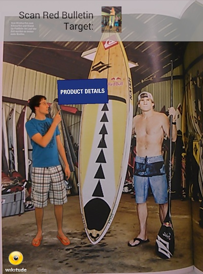
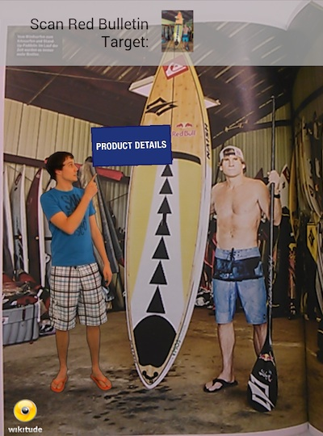

Augmented reality videos
Videos in an augmented reality scene are an effective way to provide a spectacular experience to your users. Videos can run in three modes and can come from different sources. In general you can't upload videos to the Wikitude backend but need to use self-hosted videos or videos from an online video service (like YouTube).
Available modes:
Supported video sources:
Fullscreen Videos
Fullscreen videos are video files that play back in the native player of the device of the user. Instead of playing directly in the live camera, fullscreen videos will open a separate window and start the video player. When the user clicks back or closes the window will bring back the user to the augmented reality experience.

Overlay Videos
Overlay or augmented reality videos play back directly in the live camera view on top of an image or at a specific geo location. You can choose the size of the video and the position of it.
Note: In order for overlay images to work they need to be encoded with a certain video codec (H.264). The chapter video codecs describes in detail. Also not all devices are capable of play back an overlay video - read the chapter supported devices for details.
- Self-hosted videos: Make sure to use H.264 encoded files, but other than that self-hosted files can be used as overlay videos.
- YouTube: Videos hosted on YouTube can not be used directly for overlay videos due to license restrictions. If you have access to the source video file, encode it into a H.264 video file, upload it to your server and you are good to go.
- Vimeo: Videos hosted on vimeo can not be used directly for overlay videos due to license restrictions. If you have access to the source video file, encode it into a H.264 video file, upload it to your server and you are good to go.

Overlay videos will play back immediately if this option is selected or otherwise start with the play back once the user clicks on the video. The video will pause and resume if user is moving away from the target image containing the video.
Overlay Videos with alpha channel
Beside standard videos Wikitude Studio can also handle videos with transparent background (alpha channel). Like transparent images, videos can have a transparent background.
 

Producing a transparent video is usually done using a green screen for filming and a technique called chroma key to replace the green background with transparency. Extensive information is available on the internet that should help you get started on this topic.
There are different video codecs that support alpha channels for motion picture and most of them will work as your raw material. We have extensively tested Apple ProRes 4444 codec for our own development and were satisfied with the results.
The Wikitude SDK can only render H.264 encoded videos, which is a codec that in practice does not support an alpha channel. The solution here is to include the alpha channel in a separate (visible) part of the video. The video is split vertically consisting of a color and a alpha channel in the final video below each other. The following image shows how the preprocessing result should look like.

The upper half of the image transports the color information for the final video while the lower half includes a grayscale representation of the alpha layer. White areas will be fully opaque and black areas will be fully transparent. If you are familiar with Photoshop, think of the lower half as a mask. Resulting videos have an height that is exactly twice as big as the input video.
To convert your raw video to a valid input video for the Wikitude Studio you need to re-encode the video and automatically create the alpha mask. The script below included in the Wikitude SDK (separate download) uses ffmpeg to do so and wraps the necessary commands. Follow these simple steps:
MacOS X
- Open the Terminal application
- Input
cd <SDK>/tools/video/MacOSX. Replace<SDK>with the path to the SDK folder - Execute
sh convert.sh <input video> <output video>. Replace<input video>with the path to your transparent video and<output video>with the path where you want the output video to be stored.
Windows
- Open the Command Line
cd <SDK>\tools\video\Windows. Replace<SDK>with the path to the SDK folder- Execute
convert.bat <input video> <output video>. Replace<input video>with the path to your transparent video and<output video>with the path where you want the output video to be stored.
This creates the required video with a vertically split color and alpha channel.
Position a video containing an alpha channel in the Wikitude Studio
The video you are uploading will be twice as high as the video the user is going to see. Make sure to consider this when placing the video on your target image.
Self-hosted Videos
You can use any URL or link to a video, which is publicly accessible. This can anything from a link to a file in the public folder of Dropbox to a link to a video on your own server. Just make sure to comply with the supported video codecs if you like to use overlay videos or overlay videos with alpha channel.
Videos from YouTube

The video augmentation will automatically recognize if you enter a URL to a YouTube video (like http://www.youtube.com/watch?v=yFU774q6eVM). YouTube videos can not be used for overlay videos or overlay videos with alpha channel due to license restrictions. YouTube videos will always be play back in fullscreen mode.
You can select the default thumbnail image provided by YouTube or upload your own thumbnail image.
When you resize and position the augmentation you are actually resizing and positioning the thumbnail image.
Videos from Vimeo

The video augmentation will automatically recognize if you enter a URL to a video file hosted on vimeo. Videos on vimeo can be used for fullscreen videos only. Entering a link to a vimeo video (like https://vimeo.com/51396462) will play back the video in fullscreen mode only.
Thumbnail images
Thumbnails are the images, which are shown to your user, when the video hasn't been started. They are preview images for your users so that they know what to expect. Wikitude Studio can either download the default thumbnail image from a video provider (YouTube or vimeo) and use this as the thumbnail. Or alternatively you can upload a custom thumbnail image for your video. The image can be any size and any picture you like.
Note The Wikitude Studio does not add any play buttons to the thumbnail image.
Browser and H.264 support
You are very likely encountering a No show today error in Wikitude Studio. This means that your browser can't play back the selected video. Some browsers do have difficulties (Firefox) to play back H.264 encoded files directly in the browser. However this only means that we can't show you a pretty preview of your video playing directly in the Wikitude Studio. If you have chosen the correct codec your augmented reality experience will just work fine.
Supported Devices
In general videos are fully supported on devices running iOS 6+ and Android 4.0+. Other devices will still play back the video but only in fullscreen mode as a fall-back solution.
- iOS 6.0 or newer: full support
- iOS 5.x or older: only fullscreen videos
- Android 4.0 or newer: full support
- Android 3.x or older: only fullscreen videos
The Wikitude SDK in the background is detecting the appropriate mode accordingly. This means that your user is trying to play back a overlay video with a non-capable device, the video will be played back in fullscreen mode.
Summary: Only iOS 6+, Android 4.0+ devices will play back overlay videos. All other devices will show a fullscreen video.
Supported Video Codecs
Unfortunately support of video throughout mobile devices is not straight forward. Devices and operating system differ in what videos they can play back and which videos they reject. To support all platforms the best solution is to use an H.264 encoded video with a maximum resolution of 720p (1280x720 pixel). To make things even more confusing the H.264 codec defines different profiles. Not all of them play back nicely so make sure that you are using either one of the following
- Baseline
- Extended
- Main
The recommendation for Android and iOS with broad support is to use H.264 (AVC) as codec (Baseline profile) with .mp4 as container format. For full list of media support on Android see the official guide or iOS web guide.
If the profile differs especially Android devices will most certainly misbehave (fail to play or crash entirely) when playing back those videos.
Here at Wikitude we use the app Handbrake for transcoding existing videos to the correct format. Below you see a screenshot with the settings we are using
- H.264 codec
- Baseline profile
- Limiting max video bitrate to 1250 kbps